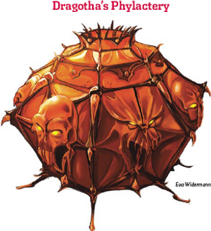

Week 49 - Well, that was quick.
25. Guardian of the
Heart
The stairs descend into an oddly-shaped
room with a ceiling vaulting forty feet
overhead. Great stone double doors exit
to the northeast. These are covered in
a detailed bas-relief depicting a human
form trapped in a trapezohedral shape. All
around this form writhe dozens of carved
worms. A strange pale golden shimmering
seems to dance at times over these doors,
and set into the center of each is a single
small keyhole.
The party triumphantly head back to the citadel. They ask to see the vault, and Kargo Thundersmiter agrees - for reasons which soon become apparent. For on the wall of the outer chamber of the vault is a mural depicting … themselves! Themselves in the
closing battle of the Library of Last Resort.
Pondering how to open the door, a ghost materialises. It is Alastor Land, whom Frith and Flash recognise. Alastor, it seems, has been on a strange spirit journey, and is heir - in a roundabout fashion - to the legacy of the Order of the Storm. With the opening of the Library of Last resort, that legacy is now open to him. He knows the ritual, and if Kargo Thundersmiter and the party will operate the keys, he will recite it.
The party decide to leave it till tomorrow.
— † —
Next day dawns bright and early. The casters spend an hour preapring spells, then troop down to the vault. Alastor materialises again and begins reciting - it takes over an hour. Mend understands what is going on - layer after layer of spells are being unwound and deactivated, like vault doors being unlocked. The final word is spoken, and the vault is no longer a magical prison - just a room made of rock. Kargo and Mend operate the keys, and the door swings open.
26. Phylactery Vault
The ceiling of this vaulted chamber is lost
in shadow above. Flanking stairs rise ten
feet to a platform across the room. Atop
it stands the statue of a rampant dragon,
wings spread, foreclaws extended, and
mouth agape. Its chest is open, revealing
its rib cage, wherein floats a ruby-red
box, its faces carved with leering dragons.
Dark striations of rock travel vertically
through the walls, creating the illusion
of pulsing blood veins in the light given
off by the glowing red box. A susurrus
echoes through the chamber like dark
secrets long hidden. As the doors swing
wide, the flickering light pulses once, and
then fades.
Inside is - amazing. A simple room, every surface covered with sophisticated
Glyphs of Warding, mainly keyed with positive energy as well as elemental cold, disjunctions, and other abjurations. The glyphs are inactive now, but had Dragotha been reincarnated at his phylactery, and had he survived - which is doubtful - the firing of these glyphs, he would then have had a citadel full of Fire Giants to contend with, each one a madman intent on slaying every dragon he could find.

But that’s not what concerns the party. Before them stands what is - unmistakably - Dragotha’s phylactery, and Gauthkan wastes no time, smashing it within seconds.
The party stand around congratulating themselves, but after a moment - the side of the chamber gives way! Someone has cast
Rock to Mud on the now-unmagical vault wall - Brazzemal The Burning, an ancient red dragon.
Well! Someone puts up a Wall of Blades, but Brazzemal avoids it. Then Mend steps forward and tosses some Dust of Sneezing and Choking into the air, to which he (being a warforged) is immune. Brazzemal is not, and is disabled. He sneezes a ball of flame once or twice, but the party chop him up with no trouble.
Then they take their leave, and go shopping.
— † —
Crap. DMs - have you ever read the description of Dust of Sneezing and Choking? It’s better than Power Word Stun - an 8th level spell. Anyway. Everyone pings to level 19, and we bid a relieved farewell to the Kings of the Rift.